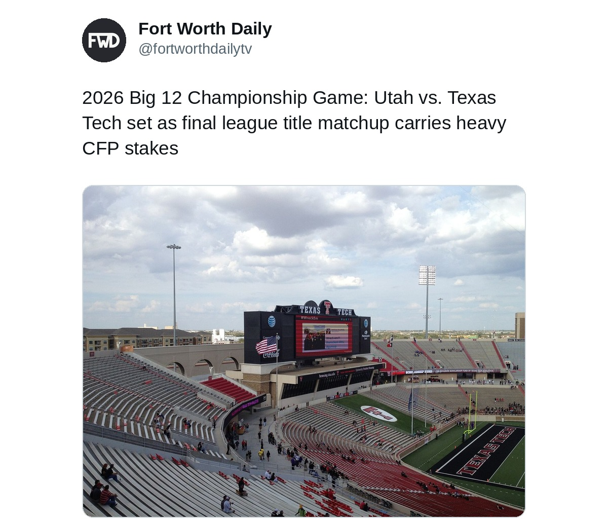

FWD
Fort Worth Daily
Just now · 🌎 · sports · template writer
Just now · 🌎 · sports · template writer
The undefeated Utes can secure a CFP bye and push Devon Dampier into the Heisman spotlight. However, major playoff implications are on the line when No. 2 Utah and No. 11 Texas Tech battle at AT&T Stadium in Arlington, Texas. Utah ranks as the only undefeated team remaining in college football, marching out to an 11-0 record entering the season finale against West Virginia on Friday night.

FWD
story + scoring
{
"source": "CBS Sports",
"kind": "rss",
"score": 0.5991,
"relevance": 2,
"url": "https://www.cbssports.com/college-football/news/utah-texas-tech-big-12-championship-game-2026-preview-prediction/",
"image_license": "wikimedia-cc",
"image_credit": "Photo: Falcon8765 via Wikimedia Commons (CC BY-SA 3.0)"
}